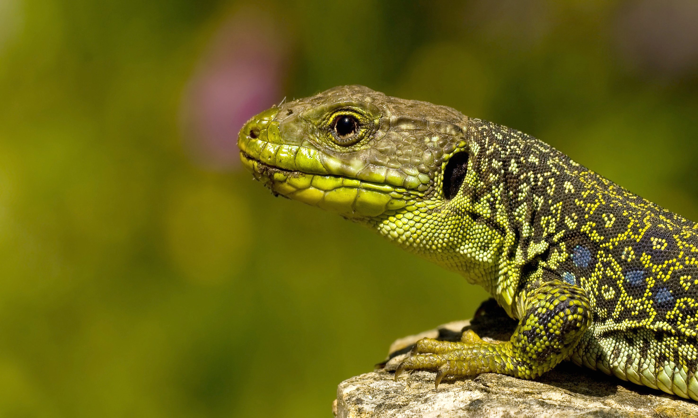

|
The earliest known fossil remains of a lizard belong to the iguanian species Tikiguania estesi, found in the Tiki Formation of India, which dates to the Carnian stage of the Triassic period, about 220 million years ago.
Most lizards live in trees or on the ground; only a few live in water. Lizards are small cold-blooded reptiles that have a long tail, eyelids, and usually have four legs with five toes on each foot (a group of lizards called amphisbaenas have no legs). Most lizards also have ear openings.
|

|